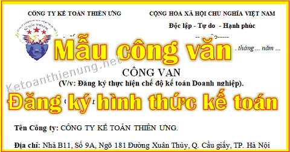

Mẫu công văn đăng ký hình thức kế toán mới nhất: Đăng ký chế độ kế toán theo Thông tư 133 hoặc 200, đăng ký hệ thống tài khoản, sổ sách, chứng từ, báo cáo...
Quy định về Chế độ kế toán áp dụng cho Doanh nghiệp:
-------------------------------------------------------------
Chế độ kế toán theo Thông tư 200/2014/TT-BTC:"Điều 1. Đối tượng áp dụng
- Thông tư này hướng dẫn kế toán áp dụng đối với các doanh nghiệp thuộc mọi lĩnh vực, mọi thành phần kinh tế. Các doanh nghiệp vừa và nhỏ đang thực hiện kế toán theo Chế độ kế toán áp dụng cho doanh nghiệp vừa và nhỏ được vận dụng quy định của Thông tư này để kế toán phù hợp với đặc điểm kinh doanh và yêu cầu quản lý của mình."
-----------------------------------------------------------------
Chế độ kế toán theo Thông tư 133/2016/TT-BTC"Điều 2. Đối tượng áp dụng:
1. Thông tư này áp dụng đối với các doanh nghiệp nhỏ và vừa (bao gồm cả doanh nghiệp siêu nhỏ) thuộc mọi lĩnh vực, mọi thành phần kinh tế theo quy định của pháp luật về hỗ trợ doanh nghiệp nhỏ và vừa trừ doanh nghiệp Nhà nước, doanh nghiệp do Nhà nước sở hữu trên 50% vốn điều lệ, công ty đại chúng theo quy định của pháp luật về chứng khoán, các hợp tác xã, liên hiệp hợp tác xã theo quy định tại Luật Hợp tác xã.
Điều 3. Nguyên tắc chung
1. Doanh nghiệp nhỏ và vừa có thể lựa chọn áp dụng Chế độ kế toán doanh nghiệp ban hành theo Thông tư số 200/2014/TT-BTC ngày 22/12/2015 của Bộ Tài chính và các văn bản sửa đổi, bổ sung hoặc thay thế nhưng phải thông báo cho cơ quan thuế quản lý doanh nghiệp và phải thực hiện nhất quán trong năm tài chính.
Trường hợp chuyển đổi trở lại áp dụng chế độ kế toán doanh nghiệp nhỏ và vừa theo Thông tư này thì phải thực hiện từ đầu năm tài chính và phải thông báo lại cho cơ quan Thuế.
3. Trường hợp trong năm tài chính doanh nghiệp có những thay đổi dẫn đến không còn thuộc đối tượng áp dụng theo quy định tại Điều 2 Thông tư này thì được áp dụng Thông tư này cho đến hết năm tài chính hiện tại và phải áp dụng Chế độ kế toán phù hợp với quy định của pháp luật kể từ năm tài chính kế tiếp."
------------------------------------------------------------------
Chế độ kế toán theo Thông tư 132/2018/TT-BTC:"Điều 2. Đối tượng áp dụng
1. Đối tượng áp dụng Thông tư này là các doanh nghiệp siêu nhỏ, bao gồm các doanh nghiệp siêu nhỏ nộp thuế thu nhập doanh nghiệp (thuế TNDN) theo phương pháp tính trên thu nhập tính thuế và phương pháp theo tỷ lệ % trên doanh thu bán hàng hóa, dịch vụ.
2. Tiêu chí xác định doanh nghiệp siêu nhỏ thực hiện chế độ kế toán theo Thông tư này được thực hiện theo quy định của pháp luật về thuế."
----------------------------------------------------------------------------------------
Như vậy:
- Doanh nghiệp siêu nhỏ sẽ áp dụng Chế độ kế toán theo Thông tư 132.
-> Hoặc theo Thông tư 133 (Nhưng trước khi áp dụng nên gửi Công văn đăng ký chế độ kế toán cho Chi cục thuế).
- Doanh nghiệp vừa và nhỏ áp dụng Chế độ kế toán theo Thông tư 133.
-> Hoặc theo Thông tư 200 (Nhưng trước khi áp dụng thì phải gửi Công văn đăng ký chế độ kế toán cho Chi cục thuế và trường hợp thay đổi cũng phải gửi lại).
- Doanh nghiệp lớn áp dụng Chế độ kế toán theo Thông tư 200.
Chi tiết xem tại đây: Tiêu chí xác định doanh nghiệp vừa và nhỏ
------------------------------------------------------------------------------------------------
Sau đây Kế toán Diệu Tâm xin chia sẻ mẫu Công văn đăng ký hình thức kế toán để các bạn cùng tham khảo:
| CÔNG TY KẾ TOÁN DIỆU TÂM | CỘNG HÒA XÃ HỘI CHỦ NGHĨA VIỆT NAM |
| Độc lập - Tự do - Hạnh phúc | |
| -----o0o----- | -----o0o----- |
| Số …/…….. | Hà Nội, ngày ... tháng ... năm … |
CÔNG VĂN
(V/v: Đăng ký chế độ kế toán Doanh nghiệp)
Kính gửi: Chi cục thuế Quận ........
Tên Công ty: CÔNG TY TƯ VẤN MINH PHÚC.
Địa chỉ: Nhà B11, Số 9A, Ngõ 181 Đường Xuân Thủy, Q. Cầu giấy, TP. Hà Nội
Mã số thuế: 0112456835
Ngành nghề kinh doanh: Đào tạo kế toán thực tế
SĐT: 0987654321 Email: ketoandieutam@gmail.com
Theo Giấy phép Kinh doanh số: 0312351212, ngày 04 tháng 07 năm 2013 của Sở Kế Hoạch và Đầu Tư Thành Phố Hà Nội.
Công ty Tư vấn Minh Phúc xin đăng ký sử dụng chế độ kế toán theo các nội dụng sau:
1. Chế độ kế toán áp dụng: Theo Thông tư 133/2016/TT-BTC ngày 26 tháng 8 năm 2016 của Bộ tài chính.
- Hệ thống tài khoản: Theo Thông tư 133/2016/TT-BTC
- Hệ thống chứng từ: Theo Thông tư 133/2016/TT-BTC
- Hệ thống sổ sách: Theo Thông tư 133/2016/TT-BTC
- Hình thức ghi sổ: Nhật ký chung
- Hệ thống báo cáo tài chính: Theo Thông tư 133/2016/TT-BTC.
2. Ngôn ngữ trong kế toán: Tiếng Việt.
3. Đơn vị tiền tệ trong kế toán: Đồng Việt Nam (ký hiệu quốc gia là “đ”; ký hiệu quốc tế là “VND”)
- Đơn vị đo lường sử dụng trong kế toán: Theo hệ thống đo lường chính thức áp dụng tại Việt Nam.
4. Kỳ kế toán áp dụng: Kỳ kế toán năm 12 tháng theo năm dương lịch.
- Kỳ kế toán năm đầu tiên bắt đầu từ ngày thành lập đến hết ngày 31 tháng 12 năm dương lịch.
- Kỳ kế toán năm tiếp theo: Từ ngày 01 tháng 01 đến hết ngày 31 tháng 12 năm dương lịch.
5. Phương pháp khấu hao TSCĐ: Phương pháp trích khấu hao theo đường thẳng.
6. Phương pháp đánh giá hàng tồn kho: Theo phương pháp bình quân gia quyền.
7. Phương pháp kế toán hàng tồn kho: Phương pháp kiểm kê định kỳ.
Xin đề nghị Chi cục thuế Quận …………… xem xét chấp thuận.
| Nơi nhận: | Người đại diện pháp luật |
| + Như kính gửi | (Ký, ghi rõ họ tên và đóng dấu). |
| + Lưu VT |
------------------------------------------------------------------------
Tải Công văn đăng ký Chế độ kế toán về tại đây:
Nếu bạn không tải về được thì có thể làm theo cách sau:
Bước 1: Để lại mail ở phần bình luận bên dưới
Bước 2: Gửi yêu cầu vào mail: ketoandieutam@gmail.com (Tiêu đề ghi rõ Tài liệu muốn tải)
Xem thêm: Thủ tục hồ sơ khai thuế ban đầu
-----------------------------------------------------------------------
Chúc các bạn làm tốt công việc kế toán!
Nếu bạn muốn học kê khai thuế GTGT, TNCN, hạch toán số sách, lương, BHXH, lên Báo cáo tài chính, Quyết toán thuế TNDN cuối năm ...
=> Có thể tham gia Lớp học kế toán thực hành trên chứng từ thực tế
Nếu bạn muốn học kê khai thuế GTGT, TNCN, hạch toán số sách, lương, BHXH, lên Báo cáo tài chính, Quyết toán thuế TNDN cuối năm ...
=> Có thể tham gia Lớp học kế toán thực hành trên chứng từ thực tế
_____________________________________________
